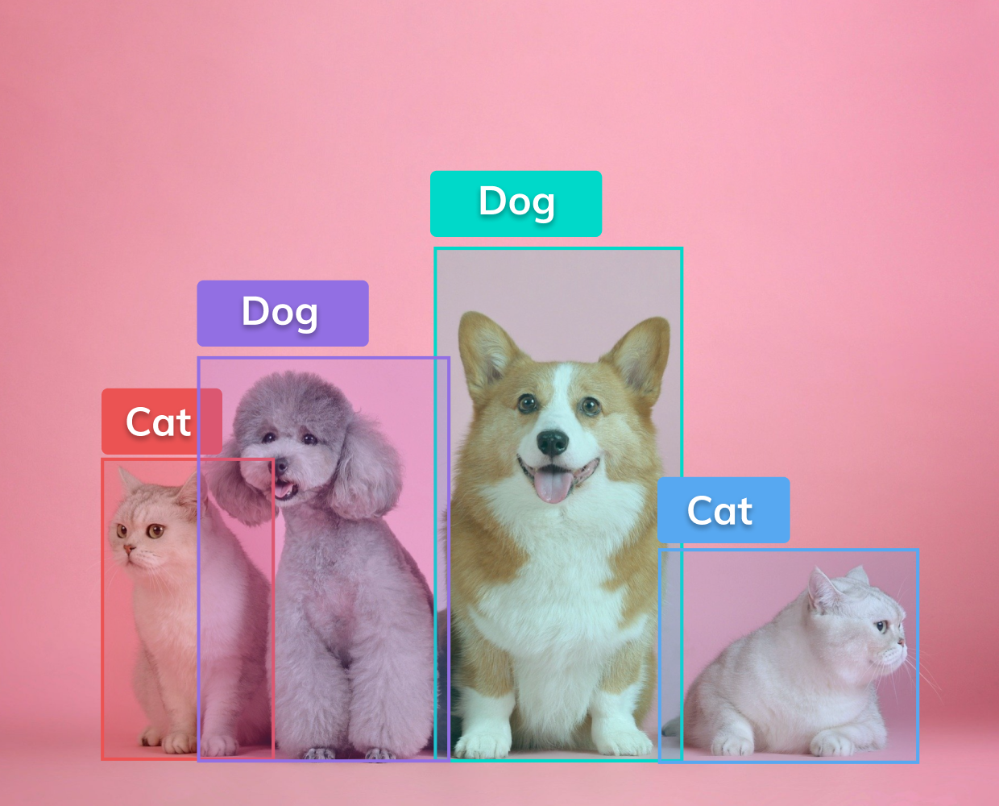

Aditya Jangra is a skilled Computer Vision Engineer with a focus on Machine Learning. His work experience includes an internship at MLWorkX, where
he collaborated with cross-functional teams to develop innovative solutions using computer vision and deep learning technologies. Aditya has
demonstrated proficiency in both traditional computer vision techniques, such as OpenCV, and modern deep learning architectures, including LSTM
networks. He specializes in utilizing Mediapipe, OpenCV, and LSTM networks, showcasing his comprehensive understanding of cutting-edge
technologies in the field. Aditya's expertise in time-series analysis and sequential data processing is evident through his construction of a robust deep
learning model for predicting user behaviour patterns. He has also implemented this model to forecast future user behaviour, providing valuable insights
for decision-making processes. Aditya is a proactive learner, continuously seeking opportunities for professional growth and development. He is
currently pursuing a B.E. in Computer Science with a focus on Artificial Intelligence and Machine Learning at Chandigarh University.

This project utilizes YOLOv8N, a deep learning model from Ultralytics, for real-time object detection. It integrates with OpenCV to process video streams or images, displaying detected objects with bounding boxes and labels. The script detect_objects.py showcases how to load and use the model (yolov8n.pt), making it accessible for applications requiring efficient and accurate object detection in various scenarios.

This project focuses on American Sign Language (ASL) detection using MediaPipe for real-time hand landmark detection, converting gestures into numpy arrays for LSTM input. The LSTM network processes sequential hand data to recognize ASL signs accurately. Features include real-time sign detection with immediate feedback, model training and evaluation capabilities, and a user-friendly GUI for easy interaction. The system provides a robust solution for real-time ASL interpretation and is open for contributions to enhance its accuracy and functionality.
This project focuses on an AI-driven system for infant voice analysis to aid in early diagnosis of health issues. It employs advanced AI algorithms to analyze infant vocalizations, providing real-time insights into their emotional and physical states. Key aspects include detailed study results demonstrating the system's accuracy, and considerations for ethical use, data privacy, and security. The project offers a comprehensive look at the technical intricacies of AI voice analysis and its effectiveness in real-world scenarios.
Implementing a parking spot detection system using Python and OpenCV. The system processes video footage to identify and highlight available parking spots in real-time, displaying counts of free spaces. It includes scripts for manual selection of parking spots on an image and processing of a video feed to mark and annotate parking spot occupancy. The project aims to facilitate efficient parking management through automated spot detection, enhancing user convenience and operational efficiency.
This project implements face recognition using a Siamese Neural Network trained on image pairs. It includes scripts for data collection (`train.py`), model training with TensorFlow/Keras, and custom layer definitions (`layers.py`). The trained model is used in `faceid.py` to verify input images from a webcam against a set of verification images. The system requires Python 3.7.9, TensorFlow, OpenCV, and Kivy, and provides a comprehensive workflow from data collection to real-time face recognition.
This project focuses on instance segmentation using the YOLOv8m-seg model. The dataset is sourced from the PixelLib repository and trained with the YOLOv8 framework. Training is performed over 100 epochs with specific configurations, and predictions are made using a custom `predict.py` script. The trained model is exported to ONNX format for deployment. This repository provides all necessary scripts and instructions for replicating the instance segmentation workflow.